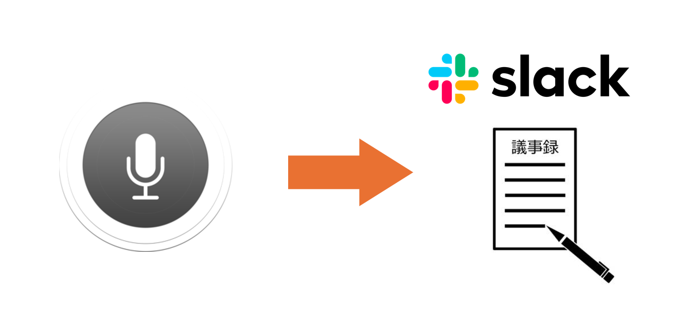
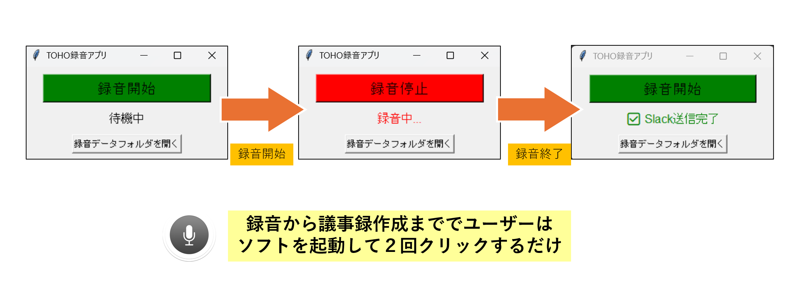
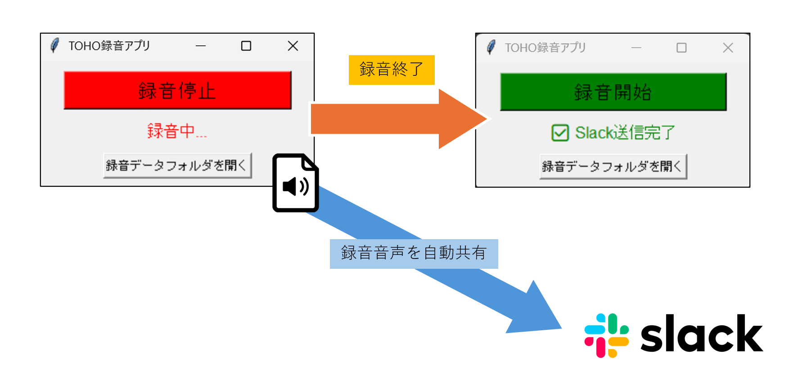
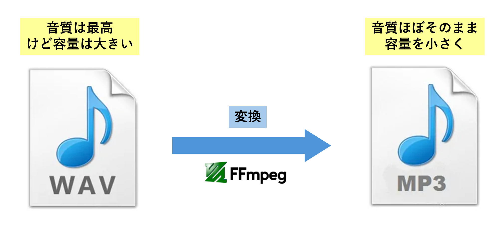
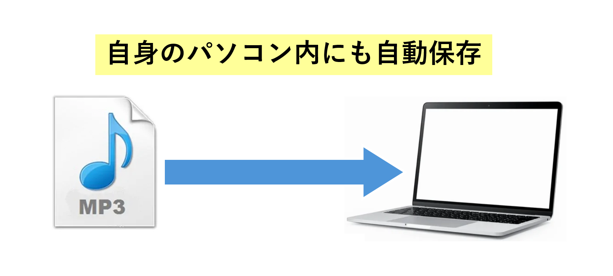
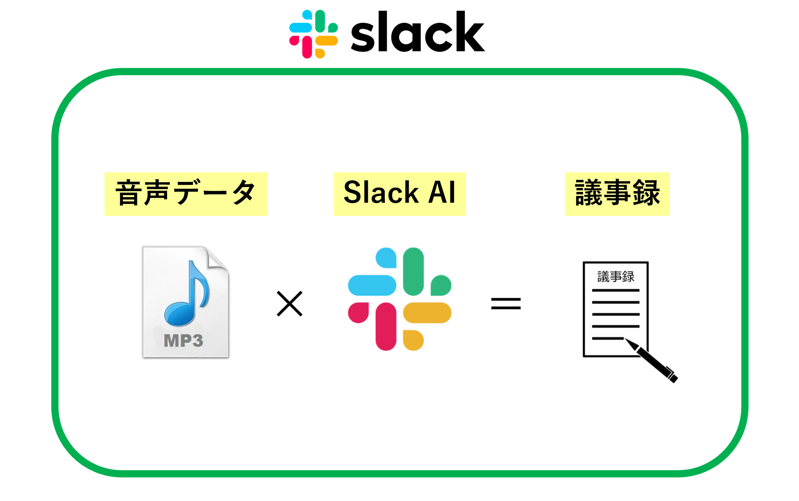

コエキャッチ

導入効果
📝 議事録作成：ボタンを押すだけで録音から共有まで完結し、作成負担を激減
💡 情報資産化：話し合った内容を余すことなく記録し、チームの知財として蓄積
🤖 AI連携：Slack経由でAIへ渡すことで、要約やタスク抽出が容易に
開発の背景・概要
日々の会議や打ち合わせにおいて、重要な決定事項やアイデアが記録漏れによって失われることは大きな損失です。また、手動での議事録作成には多大な時間がかかっていました。
コエキャッチは、AI技術をより身近に活用するための第一歩として開発されました。録音、MP3変換、Slackへの自動送信をワンストップで行うことで、「忘れることのない状態」を瞬時に作り出し、生産性を劇的に向上させます。
主な機能
ワンクリック・シンプル録音
迷うことのない単一ボタン設計。クリック一つで録音を開始し、再度クリックするだけで停止します。録音中はステータスが赤く表示され、一目で動作状況を確認できます。

Slackへの自動ファイル送信
録音停止後、バックグラウンドで即座に指定のSlackチャンネルへ音声ファイルをアップロードします。チームメンバーへの共有や、スマホからの聞き直しが非常にスムーズに行えます。

MP3自動圧縮・高速変換
高品質なWAV形式で録音した後、ffmpegエンジンを用いて軽量なMP3形式へ自動変換します。音質を保ちつつファイルサイズを抑えることで、スムーズな送信とストレージの節約を両立しています。

録音データのローカル管理
Slackへの送信だけでなく、PC内の専用フォルダ（recdata）にも日付・時刻付きのファイル名でデータを保存します。ボタン一つで保存先フォルダを開き、過去の記録を参照することも可能です。

AI利便性の検証とテスト
最新のAI技術をソフト開発に活用するテストケースとして開発。音声データをSlackのAI機能（要約アプリ等）と組み合わせることで、自動で議事録が生成されるワークフローの構築を支援します。
